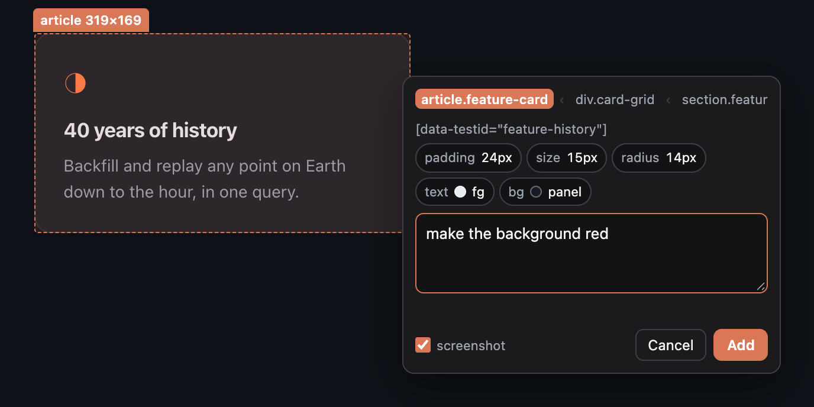
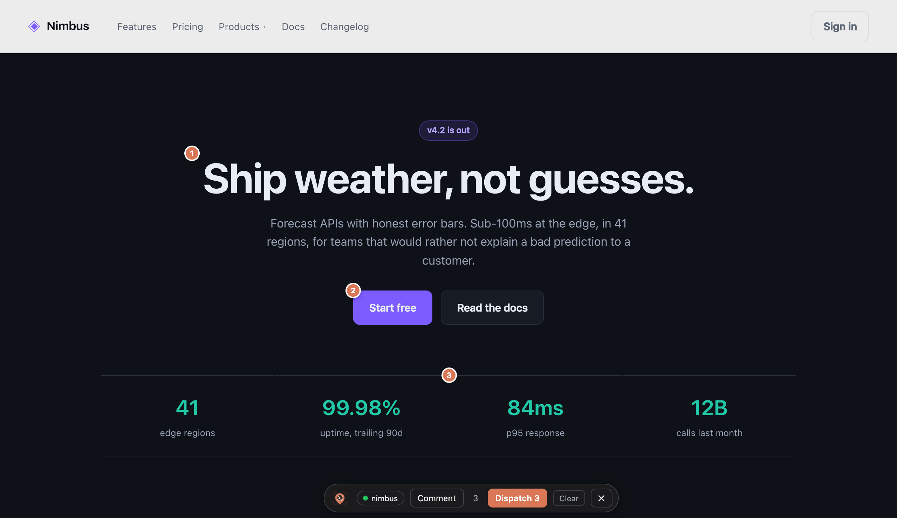

Comment on the page.
Fix it in the terminal.
Click an element, say what is wrong, and Dispatch. Claude Code gets the selector, the page state and a screenshot of what you saw. Then it answers your questions, keeps your backlog and fixes the code, through a live two-way link back to the page.
Get Pinpoint
Two pieces: a plugin for Claude Code and a browser extension. Pick your browser, then follow the steps.
Prefer a terminal? One command adds the plugin to Claude Code
(pnpm dlx and yarn dlx work the same):
npx pinpoint-dev install
Add the marketplace and install the plugin
In any Claude Code session. Dependencies install themselves.
/plugin marketplace add tolgainam/pinpoint
/plugin install pinpoint@pinpoint-marketplace
Start Claude Code with channels on
To get comments in your session on their own, start Claude Code with the flag
below. Channels are a research preview and custom ones are not on Anthropic's
allowlist yet, so the flag is required, and Claude Code shows a full-screen warning
at startup: choose I am using this for local development. Skip this step
and nothing breaks: comments wait in the queue until you run
/pinpoint:comments.
claude --dangerously-load-development-channels plugin:pinpoint@pinpoint-marketplace
Add the browser extension
Use the button for your browser at the top of this page: the Chrome Web Store (Chrome,
Edge, Brave, Arc, Vivaldi), Mozilla Add-ons (Firefox 128+) or Opera add-ons. Pin the
icon afterwards. Then run /pinpoint:setup in Claude Code; it checks that
everything is connected.
The store listings are on the way. Until they are live, load the extension from a folder.
Load it from a folder instead (developers, or until a listing is live)
This copies the extension to ~/.claude/pinpoint/extension, puts the path
on your clipboard and opens chrome://extensions. Turn on Developer mode,
click Load unpacked, paste the path, then pin the icon. Chrome runs an unpacked
extension straight from that folder, so leave it where it is. Setup ends by checking
that everything is connected.
Edge, Brave, Opera, Vivaldi, Arc: the same steps on the browser's
own extensions page.
Firefox 128+: run /pinpoint:setup --firefox instead, open
about:debugging, choose Load Temporary Add-on and pick
manifest.json. Firefox removes a temporary add-on when it quits.
/pinpoint:setup

Open your app and click the icon
Pinpoint is always on for localhost and 127.0.0.1. On any
other site, such as a staging server, clicking the icon asks your browser for
that one site; you can say no and it still works for that page.
The toolbar starts hidden on every page load. Clicking the icon shows or hides
it, and grants screenshot permission for that tab (or turn on lasting screenshot access once, on the welcome page). The pill on the toolbar shows
where comments go: your project's name, or Choose when you have several sessions open.
You're done when: the icon is pinned, clicking it on your dev page
shows the toolbar, and the pill shows your project name. If not, run
/pinpoint:doctor.

Click, type, dispatch
Click an element and write what is wrong. Each comment becomes a numbered pin that stays on its element and survives a reload. Dispatch sends the whole batch to the Claude Code session named on the pill.

Prose is a lossy channel
You spot something wrong in the browser, switch to the terminal, and type "the spacing under the brand header on the explore page is too tight." Now Claude has to reconstruct which element you meant, on which route, in which state. Everything that was obvious on screen — which node, what it looked like, what was around it — never survives the trip.
Pinpoint moves the comment to where the context already is. You click the element. The context comes along for free.
What actually lands in your session
Not a description of the element. The element.
<channel source="pinpoint" batch_id="20260822-023835-z0fp" count="1"> **1 comment** on http://localhost:3000/ · viewport: 1772x1054 @1x · colour scheme: dark · batch: 20260822-023835-z0fp whole page: ~/.claude/pinpoint/queue/20260822-023835-z0fp/page.png ### [20260822-023835-z0fp#1] make background red and add 32px padding - component: `FeatureCard` - selector: `[data-testid="feature-history"]` - text: "40 years of history — Backfill and replay any point…" - screenshot: ~/.claude/pinpoint/queue/20260822-023835-z0fp/shot-01.png </channel>
- Screenshots are real PNG files on disk, referenced by absolute path. Claude opens them with the ordinary Read tool, which renders images — no MCP image plumbing involved.
- The overlay hides itself before every capture, so pins and the toolbar never end up in the shot.
- Selectors prefer
[data-testid], then#id, then a stable class chain, then an:nth-of-typepath. React component names come from a fiber walk where they're available. - Resolutions travel back. When Claude calls
resolve_comment, the pin turns green with a ✓ and the one-line summary. You never switch to the terminal to check.
How it works
Why Claude Code only. Pinpoint is built on Claude Code's channels, a
live link into your running session. That link is what lets an answer, a progress note
or a finished fix come back to the pin on the page, not only comments go out. No other
coding agent offers it. Channels are a research preview, so you start Claude Code with
one extra flag. Without the flag nothing is lost: run /pinpoint:comments
in the session and every dispatched comment is there.
On demand any session
Works everywhere, no flags. Comments wait in the queue until you ask for them.
/pinpoint:comments
Hands-free research preview
Dispatches wake the session on their own. Custom channels aren't allowlisted yet, hence the flag.
$ claude \ --dangerously-load-development-channels \ plugin:pinpoint@pinpoint-marketplace
A localhost port is a public surface
Any page you visit can fetch() a port on your machine. Three layers
stand in the way:
- The bridge binds
127.0.0.1explicitly, never0.0.0.0. - Requests from an unrecognised web
Originare rejected, andapplication/jsonis required — which forces a CORS preflight the server refuses for unknown origins. That's the layer that actually stops a drive-by page. - Comment text is treated as untrusted input in the channel instructions, since anything reaching the session is model-visible.
Set PINPOINT_TOKEN to additionally require an X-Pinpoint-Token header.
Environment
| Variable | Default | Purpose |
|---|---|---|
| PINPOINT_PORT | 8788 | Bridge port |
| PINPOINT_QUEUE | ~/.claude/pinpoint/queue | Where batches land — global, so a dispatch is never stranded in the wrong repo |
| PINPOINT_TOKEN | — | Shared secret required on /dispatch |
| PINPOINT_RETAIN_HOURS | 24 | How long resolved batches keep their screenshots |
| PINPOINT_MAX_BATCHES | 200 | Hard ceiling on batches kept, oldest dropped first |
| PINPOINT_PROJECT_DIR | working directory | Where .pinpoint/backlog.md and shots/ live |
What it can't do
- No
file:line. React 19 removed_debugSourcefrom fibers, so mapping a clicked element toHeader.tsx:42isn't reliably possible. Pinpoint captures strong identifiers instead and lets Claude grep for them — which works well and depends on no fragile internals. - Chrome-family browsers and Firefox 128+. No Safari yet.
localhostis always on; any other site is opt-in, one site at a time, through your browser's permission prompt. - Screenshots need one click per page load, unless you opt in. Chrome grants
activeTabwhen you click the icon and revokes it on the next navigation. The welcome page has a button that asks the browser for lasting screenshot access once; it is off by default because it is a wide permission. A failed capture tells you why in a toast rather than going quiet.
License, affiliation, support
MIT licensed
Free to use, copy, modify and share, for personal or commercial work. Keep the copyright notice.
Copyright © 2026 Tolga Inam. Full text ↗
Support the project
Pinpoint is free and stays that way. A sponsorship link will live here.
Free and just as useful: star the repo, file an issue when something breaks, or tell someone who reviews a lot of UI.